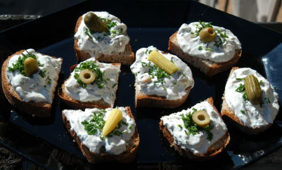

| Zutaten für 4 Personen: | |
| 500 g | Champignons |
| Butter | |
| Streuwürze | |
| Zitronensaft | |
| 500 g | Magerquark |
| 2-3 El | Rahm |
| 2 Bund | Schnittlauch |
| Salz | |
| Pfeffer | |
| verschiedene Brotsorten | |
Champignons reinigen und in kleine Würfelchen hacken.
Schnittlauch hacken.
Champignons in heisser Butter 3-4 Minuten dünsten.
Mit Streuwürze und Zitronensaft abschmecken. In einem Sieb abkühlen lassen.
Unterdessen den Quark mit dem Rahm anrühren, mit Salz und Pfeffer würzen. Den Schnittlauch hacken und darunter ziehen. Schliesslich die erkalteten Champignons darunter mischen.
Den Quark bergartig auf die Brotscheiben streichen und garnieren.
Dieser Quark schmeckt auch vorzüglich zu Schalenkartoffeln.
RE: Schmeckte am 29.5.2004 sehr gut.
Packungsbeilage zu Kuhn Champignons @LINKBACK_TAG@ @WAKELOCK@